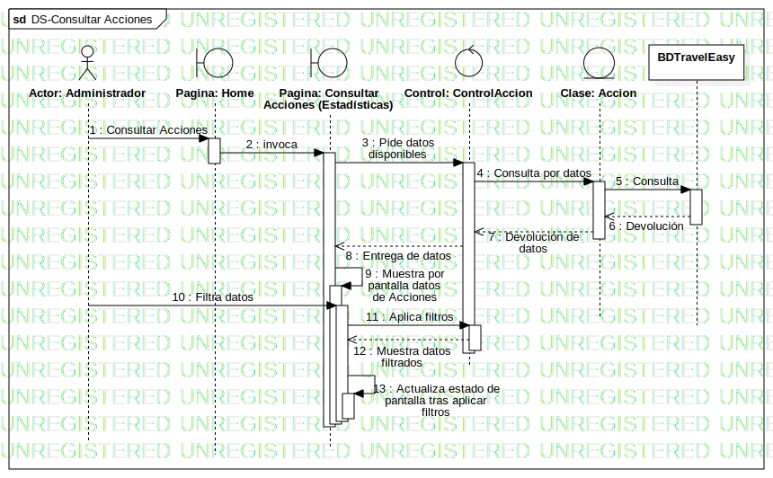

Detalle
UMLInteraction
Travel Easy
::
Modelado Travel Easy
::
Travel Easy
::
13- Consultar Acciones
::
Detalle
Description
none
Diagrams

DS-Consultar Acciones
Participants
Actor: Administrador
Pagina: Consultar Acciones (Estadísticas)
Control: ControlAccion
Clase: Accion
BDTravelEasy
Pagina: Home
Messages
Consultar Acciones (Actor→Pagina)
invoca (Pagina→Pagina)
Pide datos disponibles (Pagina→Control)
Consulta por datos (Control→Clase)
Consulta (Clase→BDTravelEasy)
Devolución (BDTravelEasy→Clase)
Devolución de datos (Clase→Control)
Entrega de datos (Control→Pagina)
Muestra por pantalla datos de Acciones (Pagina→Pagina)
Filtra datos (Actor→Pagina)
Aplica filtros (Pagina→Control)
Muestra datos filtrados (Control→Pagina)
Actualiza estado de pantalla tras aplicar filtros (Pagina→Pagina)
Properties
Name
Value
name
Detalle
stereotype
null
visibility
public
isReentrant
true
Owned Elements
DS-Consultar Acciones